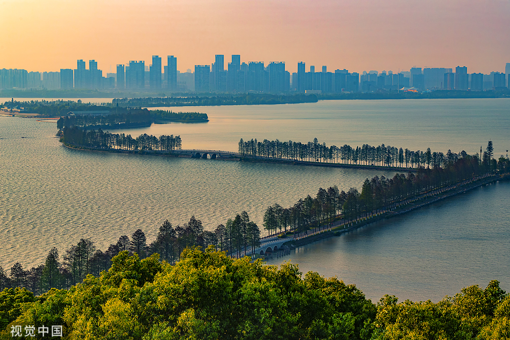
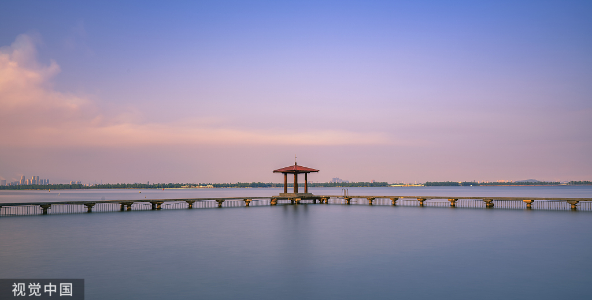
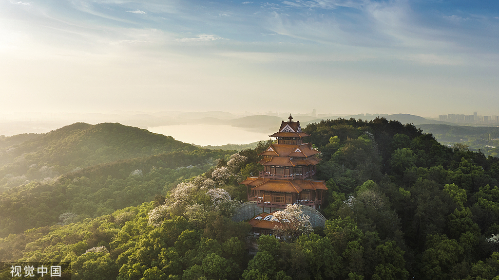
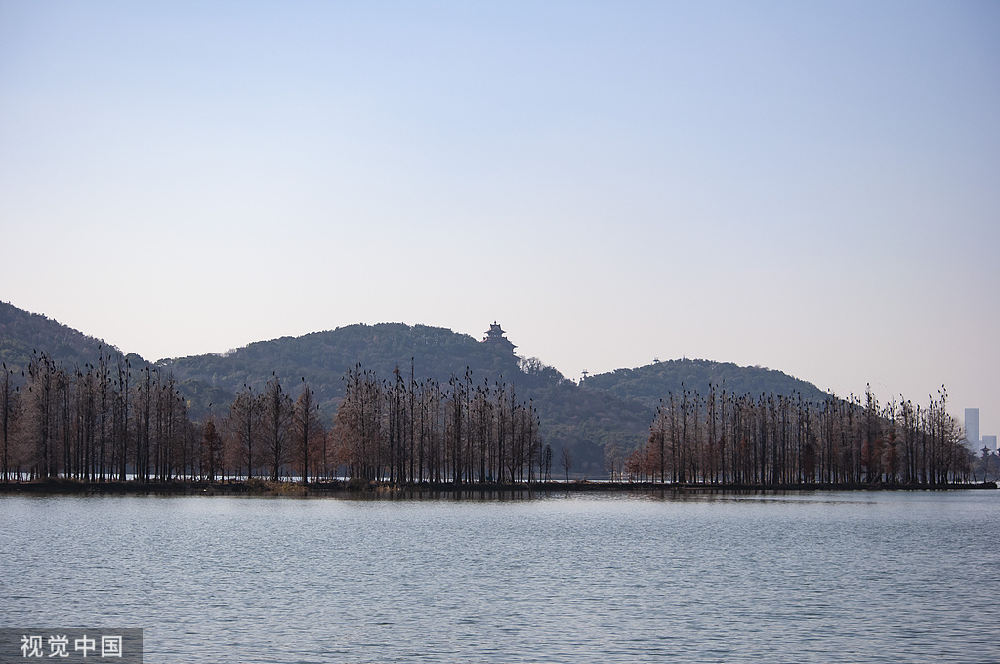
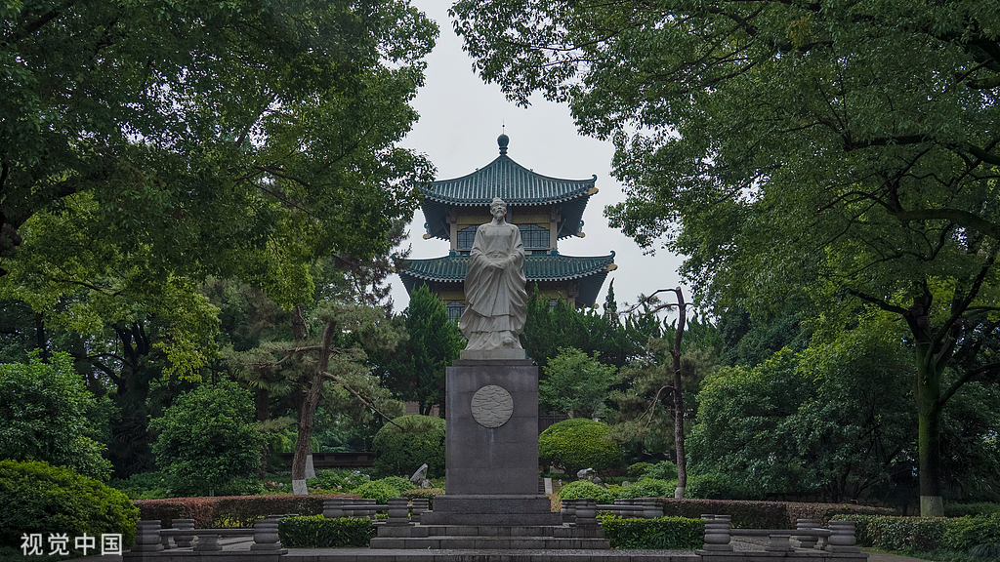
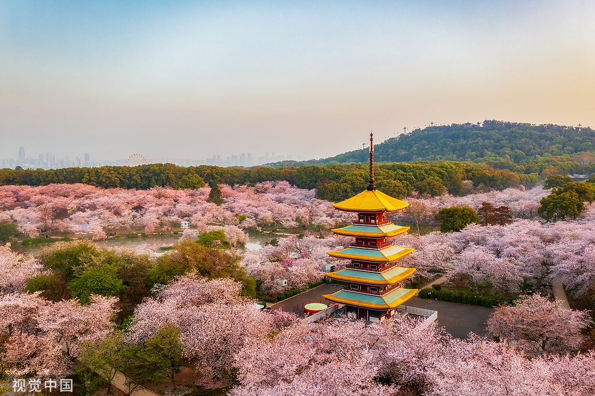
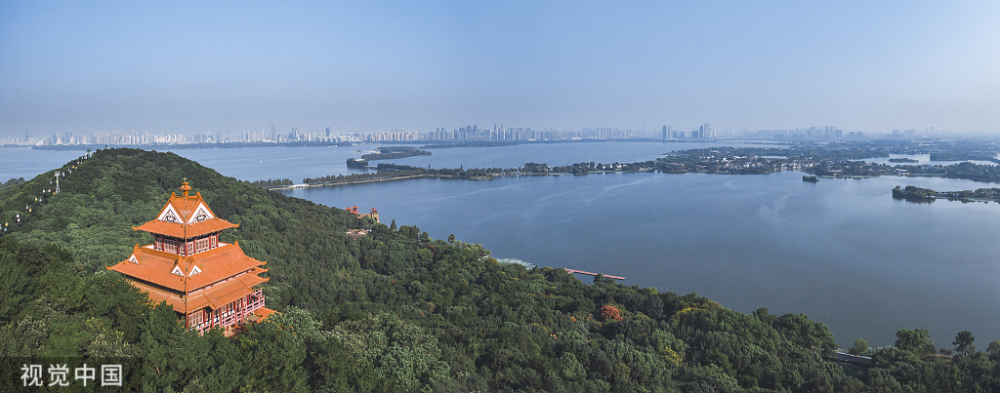
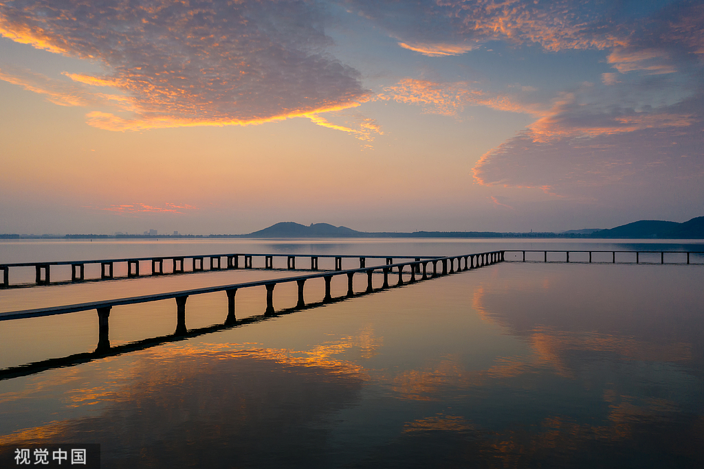

武汉东湖风景区是国家5A级旅游景区，位于湖北省武汉市武昌区东部， 是中国最大的城中湖之一，其湖岸线曲折，港汊交错，碧波万顷，青山环绕， 是一处集自然景观与人文景观于一体的旅游胜地。
(1)水域风光：东湖水域面积达 33 平方公里，浩渺的湖面在不同的季节和天气呈现出各异的景色。 晴天时，湖水波光粼粼，与蓝天白云相互映衬；雨天时，湖面烟雨朦胧，宛如一幅淡雅的水墨画。湖中有众多的岛屿， 如听涛景区内的湖光阁所在的小岛，像是镶嵌在湖中的一颗明珠。
(2)山林景色：东湖周边群山环绕，山林植被丰富，四季景色分明。春季，樱花、桃花、油菜花等竞相开放，五彩斑斓； 夏季，绿树成荫，是避暑的好去处；秋季，枫叶、银杏叶等变成金黄、火红之色，层林尽染；冬季，松柏傲雪，增添了几分坚毅之美。 磨山景区的山林就以其秀丽的自然风光吸引了众多游客。
(1)听涛景区：这是东湖风景区最早开放的景区，位于东湖西北岸，以秀丽的湖光山色和丰富的人文景观而闻名。 景区内有行吟阁、屈原纪念馆、沧浪亭等景点。行吟阁是为纪念爱国诗人屈原而建， 阁内有屈原的全身塑像，周围环绕着碧水和垂柳，景色十分优美。
(2)磨山景区：位于东湖南岸，是东湖风景区的核心景区之一。景区内有楚文化游览区、植物专类园等多个区域。 楚文化游览区内有楚城、楚天台、楚才园等景点，充分展现了楚国的历史文化和建筑风格。 植物专类园则汇聚了各种珍稀植物，如梅园、樱花园、荷花园等，四季花开不断，吸引了大量游客前来观赏。
(3)落雁景区：地处东湖东北岸，是一个以自然生态和湿地景观为特色的景区。景区内湖汊纵横，水草丰茂，有许多珍稀的鸟类在此栖息繁衍。 游客可以在这里欣赏到美丽的湿地风光，还可以参与观鸟、露营等活动，感受大自然的魅力。
(4)吹笛景区：位于东湖东南部，原名马鞍山森林公园。景区内森林覆盖率高，空气清新，有山峰、山谷、溪流等自然景观。 游客可以在这里登山、徒步、骑行，享受户外运动的乐趣。此外，景区内还有烧烤区、游乐区等设施，适合家庭和朋友一起游玩。
(2)名人文化：东湖周边有许多与名人相关的景点和故事。行吟阁是为纪念爱国诗人屈原而建，屈原曾在东湖一带行吟泽畔，留下了许多千古绝唱。 此外，东湖还与李白、毛泽东等名人有着密切的联系。李白曾在东湖畔留下了 “且就洞庭赊月色，将船买酒白云边” 的诗句；毛泽东一生钟爱东湖， 曾 48 次下榻东湖宾馆，在此办公、会见外宾、读书休息。
(1)赏花节：东湖四季都有花可赏，每年都会举办各种赏花节。 春季的樱花节是东湖最具特色的旅游活动之一，磨山樱花园内种植了数千株樱花树，品种繁多，花色各异。 每当樱花盛开时，园内游人如织，人们纷纷前来观赏这美丽的花海。 此外，还有梅花节、荷花节、菊花节等，让游客在不同的季节都能欣赏到绚丽多彩的花卉景观。
(2)水上运动：东湖广阔的水域为开展水上运动提供了良好的条件。 游客可以在东湖上划船、游泳、冲浪、帆船等，感受水上运动的刺激和乐趣。 东湖还有专业的水上运动俱乐部，为游客提供培训和指导服务。
(3)文化活动：东湖风景区经常举办各种文化活动，如楚文化节、音乐会、艺术展览等。 这些活动丰富了游客的旅游体验，让游客在欣赏自然风光的同时，也能感受到浓厚的文化氛围。
东湖，你是城市喧嚣中的宁静港湾，是喧嚣尘世里的诗意桃源。在这里，我寻得了心灵的宁静，感受到了自然的力量。 未来的日子，我会带着在东湖收获的美好，勇敢前行，让这份来自东湖的馈赠，照亮我前行的路。
